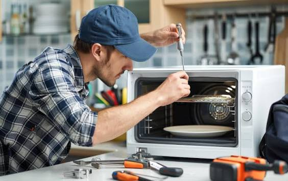

تقنيات تشخيص وإصلاح أجهزة الميكروويف
تعتمد أجهزة الميكروويف الحديثة على موجات عالية التردد ودواير كهربائية معقدة تتطلب خبرة عالية أثناء التعامل معها. يوفر مركزنا طاقم عمل مدرب على التعامل مع كبرى الماركات العالمية والمحلية باستخدام أحدث أجهزة قياس الضغط العالي وتشخيص الأعطال.
نقوم بإصلاح كافة المشاكل الفنية مثل عدم التسخين، توقف الطبق الدوار، حدوث شرر داخلي، وتوقف لوحة المفاتيح (Touch Panel) بالكامل في المنزل دون الحاجة لنقل الجهاز.
إصلاح عطل عدم التسخين (استبدال وحدة الماجنترون)
يعتبر عطل عدم التسخين مع استمرار عمل الإضاءة والطبق من أكثر الأعطال شيوعاً، ويرجع ذلك غالباً لتلف وحدة توليد الموجات (Magnetron) أو مكثف الضغط العالي (High Voltage Capacitor). نقوم باستبدال القطع التالفة بأخرى أصلية ومطابقة لمواصفات المصنع لضمان أعلى مستويات الأمان والجودة.
أبرز خدمات ومميزات صيانة الميكروويف
- استبدال وحدات توليد الموجات (الماجنترون) الأصلية لجميع الأحجام والقدرات.
- إصلاح وتغيير لوحات التحكم الرقمية (Power & Control Board) ومعالجة شاشات العرض.
- معالجة أعطال الشرر الداخلي وتغيير شريحة الميكا (Mica Sheet) والعوازل الداخلية.
- تغيير وإصلاح لوحة التاتش (Touch Pad) المعطلة واستعادة استجابة الأزرار.
- صيانة واستبدال محركات الطبق الدوار (Turntable Motors) ومحولات الضغط العالي.
- تقديم ضمان كتابي وشامل على جميع قطع الغيار المستبدلة وعملية الصيانة.

صيانة وتجهيز الميكروويف
إصلاح شامل لجميع موديلات أجهزة الميكروويف والشوايات المنزلية في نفس اليوم بقطع غيار أصلية 100% مع الفحص الشامل لمنظومة الأمان.
خدمات الدعم السريع والاتصال المباشر
نوفر خدمة الصيانة المنزلية الفورية لأجهزة الميكروويف داخل القليوبية والقاهرة والجيزة وجميع المحافظات، حيث يصلك الفني المعتمد ومعه جميع قطع الغيار اللازمة للعملية. للتواصل السريع:
أرقام التواصل المباشر والسريع
نصائح مهمة للحفاظ على أمان الميكروويف
- تجنب إدخال أو استخدام الأواني والأطباق المعدنية أو الورق الحراري لمنع الشرر الكهربائي.
- تنظيف الميكروويف من الداخل بانتظام لتجنب تراكم الدهون على شريحة الميكا وتلفها.
- عدم تشغيل الميكروويف وهو فارغ لتجنب ارتداد الموجات وإتلاف وحدة الماجنترون.
مواعيد استقبال البلاغات والخدمة
أوقات العمل
نستقبل اتصالاتكم وبلاغات الأعطال يومياً من 9:00 صباحاً حتى 10:00 مساءً طوال أيام الأسبوع والعطلات الرسمية.
الصيانة في المنزل
تتم عملية الصيانة الكاملة للميكروويف داخل منزل العميل دون الحاجة لنقل الجهاز إلا في الحالات الدقيقة جداً.